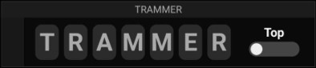

Possibilités
Le mnémonique TRAMMER à passer en revue à chaque point de report pour vérifier que rien n'a été oublié. Les 7 vérifications se valident séquentiellement via un seul interrupteur :
- T · Top : l'heure actuelle est notée, base des calculs de temps vers le point suivant.
- R · Route : cap prévu tenu pour la branche de nav, position correcte.
- A · Altitude : altitude conforme au prévu, pas d'obstacle / pas de descente nécessaire.
- M · Moteur : paramètres moteur dans le vert, rien d'anormal.
- M · Météo : météo correcte, pas de dégradation imprévue.
- E · Essence : volume restant vérifié et cohérent, permuter les réservoirs si besoin.
- R · Radio / Radionav : fréquences attendues, suivantes déjà préaffichées.
Disposition (gauche → droite)
- À gauche : un badge sombre (même style que les tags MAG/GPS du NUMCAP) affiche l'heure du dernier TRAMMER validé (format HHhMM, ex. 14h17), écrite verticalement en bleu.
- Au centre : les 7 lettres T R A M M E R en grandes pills, transparentes par défaut, qui deviennent vertes au fur et à mesure des validations.
- À droite : un unique gros interrupteur, surmonté du libellé de la vérification courante (Top, Route, Altitude…).
Gestes supportés
Double-tap sur l'interrupteur : la lettre courante passe au vert et l'interrupteur avance automatiquement à la vérification suivante (le libellé au-dessus change). Les pills ne sont pas tappables ; seul le double-tap sur l'interrupteur agit.
Cycle de validation
- État initial : les 7 lettres grises (OFF), l'interrupteur pointe sur la 1re vérification (Top).
- Au dernier double-tap, les 7 lettres sont vertes et l'heure courante est renseignée à gauche : c'est l'heure de passage au point de report.
- 5 secondes après la validation complète, l'instrument se réinitialise automatiquement (lettres OFF, interrupteur de retour sur Top) — mais l'heure du dernier TRAMMER reste affichée.
- Cette heure persiste : elle reste visible après la réinitialisation et pendant le cycle suivant, jusqu'à ce qu'un nouveau TRAMMER complet la remplace.
Note
- Chaque case NUMTRM mémorise son avancement et son heure du dernier TRAMMER. L'état est persistant : il survit au changement de tableau de bord et au redémarrage de l'application.
- Pastille de titre affichée en haut de la case (masquable via Options ▸ « Masquer le titre »).
NUMTRM
